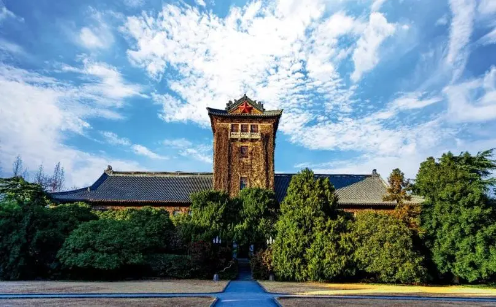
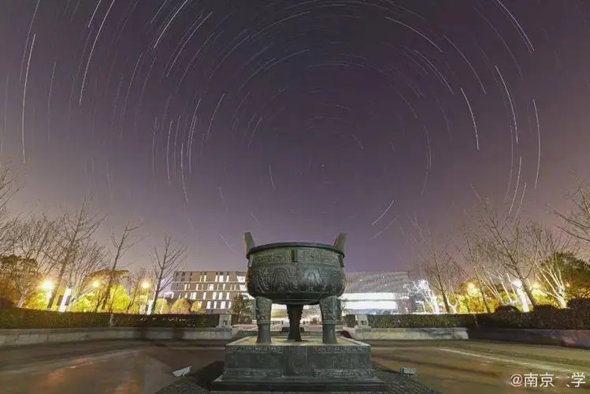

南京大学以三江师范学堂筹建的1902年作为学校建校时间。南京大学主源为中央大学，次源为1952年主体并入的金陵大学。金陵大学从1888年汇文书院成立，1952年撤销建制主体与南京大学合并
截至2021年11月，南京大学拥有中国科学院院士31人，中国工程院院士4人，中国科学院外籍院士1人，在国际或他国当选院士13人次（含第三世界科学院院士4人，发展中国家科学院院士1人，俄罗斯科学院院士1人，加拿大皇家科学院院士1人，欧洲文理科学院院士1人，欧洲科学院外籍院士2人，国际量子分子科学院院士1人，俄罗斯艺术科学院荣誉院士1人，法兰西艺术院通讯院士1人），国家杰出青年基金获得133人、优秀青年科学基金项目获得者91人，国家科技重大专项、“973计划”、“863计划”、国家重点研发计划等重大项目首席科学家98人次，国务院学位委员会学科评议组成员22人，“万人计划”科技创新领军人才22人、哲学社会科学领军人才6人、百千万工程领军人才2人、教学名师4人、青年拔尖人才21人，国家级教学名师11人，教育部“百千万人才工程”国家级人选34人。
南京大学建立了中国最早的现代科学研究实验室。截至2010年5月，南京大学共取得国家自然科学奖一等奖1项，二等奖12项，名列大陆高校第一。在最能反映基础研究水平的SCI论文榜上，发表论文数连续7年第一，被引用次数连续8年第一；在国际顶尖杂志《Science》和《Nature》发表的论文数全国第一。截止2014年10月，南京大学进入ESI排名前1%的学科为13个，分别是：化学、物理学、材料科学、地球科学、生物学与生物化学、临床医学、工程科学、环境科学与生态学、药理学与毒理学、数学、动植物学、计算机科学和农业科学。
“诚朴雄伟，励学敦行”八字校训，不仅言简意赅，琅琅上口，易于传记，而且端庄大气，寓意深刻，富有哲理。“诚朴雄伟”原是中央大学时期的校 训，“励学敦行”是我从中国古代前贤名句中选取而来。“励学”二字在古文中常有出现，宋真宗写过一首名为《励学篇》的诗，劝勉人勤奋学习。“敦行”见于 《礼记·曲礼上》：“博闻强识而让，敦善行而不怠，谓之君子。”将“诚朴雄伟”与“励学敦行”两句合为一起作为南京大学的校训，既反映了学校的优良传 统与特色，又能体现学校办学的理想追求和实现途径。八字校训既各自独立成意，各有侧重，又相互联系，浑然一体，涵盖了教育思想、科学精神、品格修养等各个方面。
更多内容前往百度